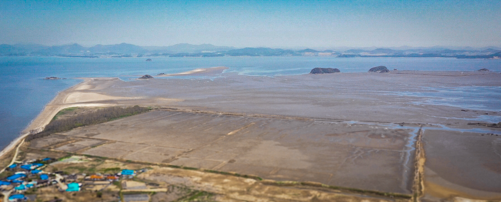

Dear Harabeoji
Upcoming Documentary
Like roots of a tree, we are the products of choices made by our forefathers.
My Harabeoji (grandfather) passed away before I was born. Growing up, I would listen to stories from my father about the person Harabeoji was. He said Harabeoji was an inventor who spent his life dedicated to creating tools like the spokes of a wheel or a garlic cutter. However, this obsession pushed our branch of the family into poverty, leaving behind a culture of risk aversion and systemic barriers that affects my aunts, uncles, and cousins in Korea to this day.
Harabeoji’s final legacy he left behind in his will was the family island. My father told me that Halmeoni (grandmother) and Harabeoji used to say that one day this property would skyrocket in value. But financial pressure led my uncles to sell off their portion, while my father spent years trying to consolidate the remaining shares. The island, located in Korea’s Seocheon Getbol, was designated as a part of a UNESCO World Heritage Site in 2021. The tidal flat, as the primary deposit for sediments from the Geumgang River System, is rich in biodiversity and has become an important feeding ground for migratory birds. It is home to around 110 species of waterbirds, including critically endangered species such as the Spoon-billed Sandpiper, Great Knot, and Bar-tailed Godwit.
While the family’s dream of this island becoming a vehicle for generational wealth remains unlikely, as an individual fascinated by nature and my Korean heritage, this story has evolved into a personal passion project. Around Thanksgiving 2026, our family will be visiting Harabeoji’s island for the first time. For this documentary, I have begun collecting interview clips from Halmeoni and my aunt to better understand Harabeoji while conducting research into the biodiversity that makes his island so special. Through this project, I hope to better understand Harabeoji and the roots that have led to who I am today.